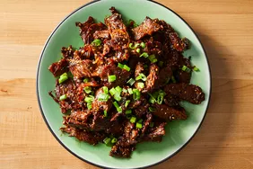

Description
Bulgogi, or Korean barbecued beef, is made with marinated sliced beef.
Most recipes call for crushed pear to tenderize the meat. My boyfriend's
Korean mother says Coca-Cola can also be used for the same purpose. This
recipe uses very thinly-sliced sirloin steak, so tenderization isn't
necessary. It's delicious served with rice, lettuce leaves, and chile
paste or kimchi.
Ingredients
For the Marinade
- ⅓ cup soy sauce
-
2 green onions, chopped, dark green parts separated from white and
light green parts
- ¼ yellow onion, thinly sliced
- 3 tablespoons white sugar
- 3 cloves garlic, minced
- 2 tablespoons toasted sesame seeds
- 1 tablespoon sesame oil
- ¼ teaspoon Korean red pepper flakes
- ¼ teaspoon minced fresh ginger
- ⅛ teaspoon ground black pepper
For the Dish
-
1 ½ pounds beef sirloin steak, cut very thin using kitchen shears
- 1 teaspoon honey, or to taste
Steps
-
Whisk soy sauce, white and light green parts of green onions, yellow
onion, sugar, garlic, sesame seeds, sesame oil, red pepper flakes,
ginger, and black pepper together in a large glass or ceramic bowl.
Add steak slices and toss to evenly coat. Cover the bowl with plastic
wrap and marinate in the refrigerator for 1 hour, or up to 1 day.
-
Heat a wok or large skillet over medium heat. Working in batches, cook
and stir steak and marinade together in the hot skillet, adding honey
to caramelize the steak, until steak is cooked through, about 5
minutes. Garnish bulgogi with dark green parts of green onions.